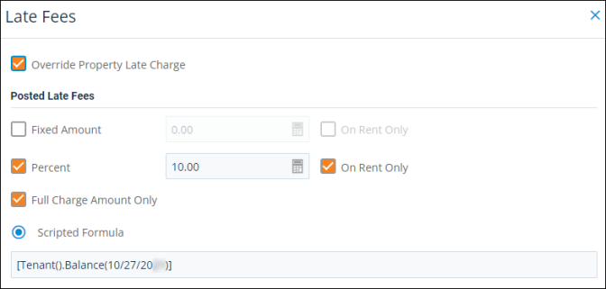

Source: https://rmxhelp.rentmanager.com/MicroContent/Resources/MicroContent/Improve-Search/late-fees.htm
Late Fees
Leveraging late fees is a key tool to combat tenant delinquencies. Late fees provide an incentive for your tenants to pay rent on time. Rent Manager offers a number of different tools that make applying late fees simple and even automatic.
Late fees are typically set up on the property so that the late fee structure can be applied to every tenant at the property. You may charge a flat rate, a rate that is a percentage of the tenant's delinquent charge, an amount based on a scripted calculation, and/or apply daily charges with options for grace periods, maximum late fee amounts, and minimum balances. In some cases you may want to apply late fees directly to the tenant and override the property late fee settings for individual tenants. The tenant Late Fees pop-up lets you enable special late fees for a selected tenant that differ from the fees applied to the other tenants of the associated property.

Types of Late Fees
In Rent Manager, posted (also called fixed) late fees can be calculated and posted as one-time charges that are applied to tenants when they fail to pay other charges in a timely manner. Late fees can be manually posted in a batch to delinquent tenant accounts or scheduled to post automatically using late fee automated postings.
Daily (also called per-day) late fees accrue each day a tenant is delinquent on a rent charge. Daily late fees are not included when posting late fees in Rent Manager, and are instead posted automatically at the moment you receive a full payment from a delinquent tenant. Rent Manager examines the payment date and uses that to calculate the late fee amount. Once a full payment is received and applied to the rent charge(s), Rent Manager applies a new late charge to the tenant's transactions for the calculated amount of all the per-day fees.
Tenants can view their pending per-day late fee charges in Tenant Web Access (TWA). Rent Manager users can view the pending per-day late fee charges from the Add Payment pop-up in the New Late Fees column.
Automation and Reports
You can use automated delinquency notifications to contact your tenants in a way that is convenient for them and communicate with them about their outstanding charges. These notifications can remind them of any outstanding charges and keep track of the interactions in the tenant's history/notes. To deter delinquencies even further, you can offer tenants multiple, convenient, and automated payment methods, which makes it easier for tenants to pay on time and help prevent late payments.
Keeping track of tenant delinquencies and identifying trends can be a lot of work. To help you maintain this information, Rent Manager has several dashboard tiles and reports that provide you with real-time information of the tenants that are delinquent at your properties.